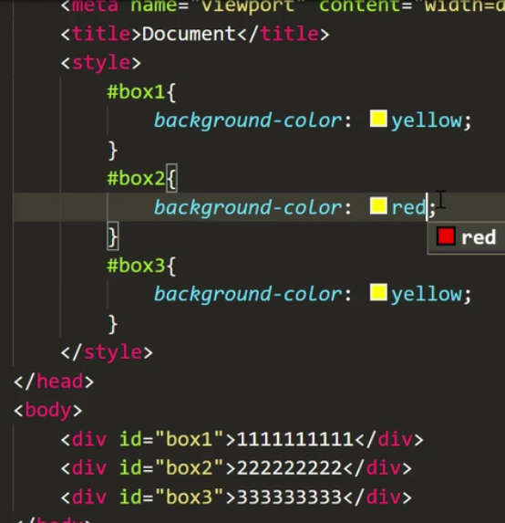

css样式表
2021.12.14
css内部样式表
- "style"标签内是css的区域
- css标签要放到head标签内
css外部样式表
- 在本地文件夹中新建一个文件夹专门存放css标签
- 此时就不用“style”标签了
- 在源文件的“head”标签中应使用“link”标签引用
- 也可以用“style”+“@inport”来引用
css行内样式表
三种样式表的优先级
- 一般习惯将内部标签写在外部标签下面，这种情况下内部标签的优先级比较高
- 由于行内样式表肯定在前两者下面，所以行内样式表优先级更高
- 特例1：“！important”标签能改变优先级
- 特例2：同一个标签若在一个优先级比较低的样式表中有特别的属性，则该属性会被保留，比如background-color
- 特例3：类选择器“class”标签,一个“class”标签上可以加两个类名
- 特例4：ID选择器